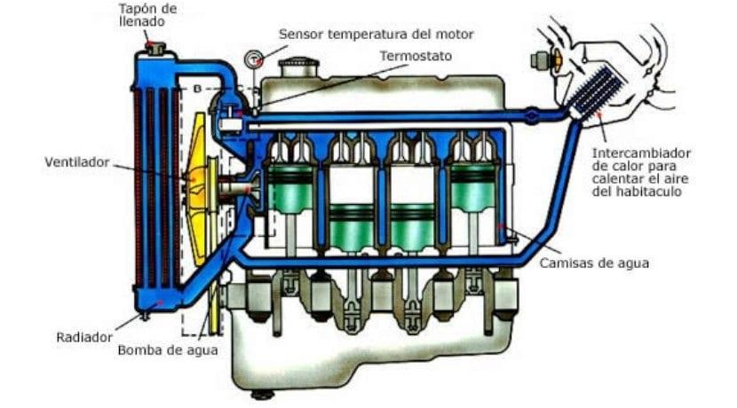

El funcionamiento del sistema de refrigeración de nuestro Spark es muy sencillo. La bomba del circuito de refrigeración (bomba de agua), que está accionada por el motor del coche, activa la circulación del líquido refrigerante en todo su recorrido con una velocidad proporcional a la del propio motor. Para ello la bomba aspira el líquido refrigerante de la parte baja del radiador y la impulsa al interior del motor a través de los espacios que hay entre la cámara de combustión y las camisas de los pistones.
Cuando ha completado su recorrido interno por el bloque, el refrigerante sale por la parte alta de la culata y vuelve al radiador por la parte superior. Cuando llega a él, ha de pasar por todos los paneles de refrigeración a fin de disminuir su temperatura gracias a la acción del aire que entra desde la calle (o a través del electro ventilador en caso de que el vehículo esté parado).
Gracias a esta circulación, el agua se mantiene en temperaturas que oscilan entre los 8 a 10 grados centígrados a la salida y a 80 o 90 grados a la entrada. Esta temperatura está controlada por una válvula de paso (conocida comúnmente por termostato) que vigila que no existan cambios bruscos de temperatura en el interior del motor y por consiguiente surjas averías por dilatación y contracción de los materiales.
El sistema esta alimentado por el líquido de refrigeración el cual tiene como misión absorber el exceso de calor del motor, de forma que se mantenga en su temperatura ideal, que son unos 90 ºC. Además este refrigerante debe funcionar correctamente en el rango de temperaturas de uso del coche, o lo que es lo mismo, debe funcionar en nuestra región por mucho calor o frío que haga.
Los refrigerantes tienen múltiples características (llamadas propiedades) que lo hacen sumamente resistente a posibles problemas que pudiera tener un líquido dentro del motor por eso en un anticongelante buscamos que:
•Buena capacidad calorífica (la mejor posible).
•Baja temperatura de congelación, algo que supone que no aumente el volumen del líquido, con el consiguiente riesgo de que alguna parte del circuito se raje o se deteriore. El circuito suele tener mecanismos que ayudan a mitigar esos efectos.
•Alta temperatura de ebullición, evidentemente, bastante más alta que la temperatura de funcionamiento del motor, y posiblemente más alta que la temperatura máxima de funcionamiento del motor antes de su “desintegración”.
•Propiedades correctas anticorrosivas, y anti incrustantes. Eso supone que haya menos cantidad de depósitos sólidos, así como de depósitos de calcio y / o magnesio.
•Buenas propiedades del líquido en sí, en cuanto a su dinámica: que no se produzcan espumas, o que no persistan demasiado tiempo; que tenga una viscosidad baja, para poder fluir con menor resistencia.
El líquido ha de cambiarse cada dos años, o 40.000 km. Debido a que las propiedades se deterioran, como por ejemplo la anticorrosiva, y en general las de protección. Es decir, con el tiempo el refrigerante sigue funcionando, pero va a tender a estropear la mecánica, dañando componentes como radiador, termostato, etc.
